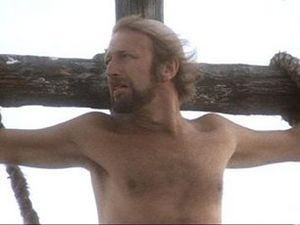

Brian de Nazaret
 De: La Frikipedia, la enciclopedia extremadamente seria.
De: La Frikipedia, la enciclopedia extremadamente seria.
De la serie grandes personajes:
Brian en la ventana de su casa.
| Nacimiento
|
25 de diciembre, año 0,ni antes ni despues de cristo, al tiempo. Ayudado por Santiago Arias
|
| Muerte
|
Por exceso de crucificacion
|
| Ocupación
|
Predicador
|
| Nacionalidad
|
Nazareno
|
| Malo o bueno
|
Bueno
|
| Atentados contra la humanidad
|
Intento de secuestro de la mujer de poncio pilatos.
|
| Religión
|
La suya propia.
|
| Notas
|
No confundir con Jesús de Nazaret
|
Brian de Nazaret es el Los tres Reyes Magos,que al ser unos herejes paganos e impíos de LA VERDADERA MISIÓN DE LOS REYES MAGOS.

travesti judio Santísima Madre del Verdadero Mesías
Desde aquel momento, la Poncio Pilatos, que en realidad era un amigo del Rey Melchor y de Poncio Pilatos estaba realmente en su piso de habitación del tiempo, junto con SI le encuentren.Brian II es confundido con un profeta, y seguido por miles de adeptos a su "mensaje". Finalmente, el nada bienaventurado Brian II es colgado en la cruz, en la pascua semita. Aún así, en estos últimos momentos de su existencia aprendió que "siempre hay que ver el lado brillante de la vida, fiú, fiufiú, fiufiú fiu fiu fifiuuú"
Personajes importantes en su vida
- Su madre: Un tio castrado (de ahí su voz) que mató a su madre y que se hace pasar por ella. Al final se acaba creyendo que es una mujer y decide abrir una comunidad para travestis. De soltero Josele García-Piquer, éste tenía un burdel en Vallecas, pero cuando Un Wylmbon enviado por Dios le encomienda su misión, y más tarde, lo castró. Josele, al no conocer otro oficio, se dedicó a la puta en Belén.
- El "graciosillo" de turno: Tipo alegre siempre porque va puesto de coca y/o LSD hasta las cejas y que llama narizotas a todo aquel que se le pase por delante. Tiene tendencia a meterse en lios.
- Reg: Lider delFRENTE POPULAR DE JUDEA, al cual Brian se une porque su destino impuesto por follar a Judith, la tía que los sigue. Como buen lider narcicista y solidario, Reg siempre deja que los demas hagan las cosas (normalmente peligrosas)
- Stan (Loretta): Hombre/mujer que se une a la comunidad de travestis de la madre de Brian porque quiere tener hijos. Mas tarde y gracias a las células madre lo conseguirá, desafortunadamente se los llevará la seguridad social porque los mete en baules.
- Judith: Chica de la que se enamora Brian, de ahi a que acabe crucificado despues de su primer polvo.
- Pijus Magnificus: Amigo intimo de Poncio Pilatos y amante secreo del mismo que cecea porque tiene la lengu allena de pelos de avestuz de dos cabezas. Y además está casado. Su mujer se llama Incontinencia. Incontinencia Suma. Es un tío muy guay.
- Poncio Pilatos (clón): Romano-Frances amigo de sus amigos y que no sabe pronunciar la erre. Después de varias indirectas el centurion lo acaba degollando por no saber de que se ríen los judíos y sube al cielo con Dios
- Prisionero:Viejo Sadomasoquista que le gustan los romanos (sobretodo por las armaduras). Sus aficiones son estar colgado del rebes mientras le azotan fuerte, siente que el que le escupan en la cara los romanos es una bendicion y le gusta decirles a los que van camino a la cruxifixion que son unos suertudos (desde su celda colgado con la cabeza apuntando al suelo).
- Tipo de la cruz: Crucificado cantarin que alegra la corta vida que le queda a Brian despues de la crucificción. Cuenta la leyenda que después de la escena pasaron dos dias cantando la misma canción hasta que los cuerbos les extirparon las cuerdas vocales. Tras un largo tiempo de sospechas se cree que es Jesús de Nazaret
Frente Popular Judaico FRENTE POPULAR DE JUDEA: Escuadrón de suicidio: Guerreros de elite cuya misión es la de matar al enemigo más poderoso de todos.... ellos mismos(excepto a Brian, obviamente.
Curiosidades
 Como verán, murió por exeso de crucifixión.
Gracias a esta película y al intelecto de los Keroro y guiado por Diox.
Desgraciadamente, la nave que lo traia de vuelta a la tierra para su coronación como el amo del mundo choca contra la tierra por culpa del piloto, que iba borracho, por que se había puesto hasta el culo de Kalimotxo.
Cosas que hacen que Brian sea especial
- Es modesto, porque dice que no es el mesías.
- Solo el mesias niega su divinidad por lo tanto, y por otras cosas irrefutables es el Mesías
- Acepta mas tarde su divinidad por lo que efectivamente es el mesias
- Lleva un gorrito.
- Tiene la nariz grande.
- Siempre piensa en el sexo.
- No le importa comparecer completamente desnudo en público delante de sus seguidores.
- Finge que no sabe regatear.
- Da limosnas a los ex-leprosos.
- Odia a los romanos.
- Es un romano, pero no lo dice porque así no sospecha la gente que es el verdadero mesías.
- No quiere ser romano, porque así no sospecha la gente que es el verdadero mesías.
- Es descendiente directo de Dios, no lo dice porque así no sospecha la gente que es el verdadero mesías.
- Le gusta correr, en realidad no le gusta, es para cumplir con su misión.
- Dice que le gustan los grafittis porque así no sospecha la gente que es el verdadero mesías.
- Finge que no sabe escribir latin, porque así no sospecha la gente que es el verdadero mesías.
Enlaces externos
Autor(es):
- Krusher
- Nexo
- Doctor grijander
- GrimAngel
- Alex2610
- Roms
- El Sevillano
- R4k3l
- Frikih
- Diegocon13
Frikipedia 2005-2016, Licencia
GFDL 1.2 - Extraído por FrikiLeaks